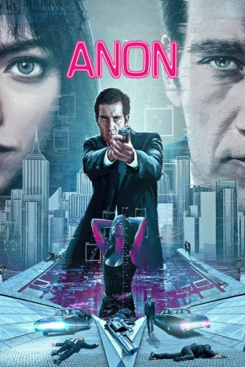

#9645 Anon
 gesehen am 10.10.2018
gesehen am 10.10.2018
 
 IMDB-Wertung: 6.0 / 10
IMDB-Wertung: 6.0 / 10  Tomatometer: 38
Tomatometer: 38  Metascore: 54
Metascore: 54 
In der Zukunft ist die Welt frei von Privatsphäre und Anonymität. Jede Erinnerung wird aufgezeichnet und somit wird der Bürger zum transparenten Wesen verdammt. Mittendrin: Sal Frieland, der seinen Lebensunterhalt als Detective verdient und zugeben muss, dass das totalitäre Überwachungsregiment immerhin die Kriminalität fast gänzlich auf Null reduziert hat. Plötzlich beginnt allerdings eine brutale Mordserie, wie es sie schon lange nicht mehr gab. Friedland geht der Sache auf den Grund und trifft bei den Ermittlungen schließlich auf eine mysteriöse junge Frau. Diese scheint dem System stets einen Schritt voraus zu sein und verfügt weder über eine Identität, noch sonst eine nachvollziehbare Historie in ihrem Leben. Ist sie der Schlüssel zu dem Ganzen? Eines steht jedenfalls fest: Das System droht massiv zu scheitern.
Jahr: 2018
Dauer: 99 Minuten
FSK: 16
Land: Deutschland Studio: Koch MediaTonspuren: DD5.1 - ,
Untertitel: Deutsch,
Auflösung: 1080p (1920x1036) Größe: 4034 MB
Genre: Thriller, Sci-Fi, Krimi, Mystery
Regisseur: Andrew Niccol
Drehbuch: Andrew Niccol
Soundtrack: Christophe Beck
Darsteller:
 Clive Owen als Sal Frieland
Clive Owen als Sal Frieland- Jeffrey Men als Chen Sheng Lu
- James Tam als Wei Han Xu
 Amanda Seyfried als The Girl
Amanda Seyfried als The Girl Jonathan Potts als Dominic Ray
Jonathan Potts als Dominic Ray- Rachel Roberts als Alysa Egorian
 Sebastian Pigott als Detective Vardy
Sebastian Pigott als Detective Vardy- David Storch als Karl Niedermeir
- Billy Parrott als Jason Carr
- Amadou Kebe als Theo Navas
 Colm Feore als Charles Gattis
Colm Feore als Charles Gattis- Jean-Michel Le Gal als James Cray
- Daniel Stolfi als Jordan Neese
- Sara Mitich als Shirley
 Joe Pingue als Lester Hagen
Joe Pingue als Lester Hagen Conrad Coates als Detective Fuchs
Conrad Coates als Detective Fuchs- Mayko Nguyen als Detective Dyer
- Jaiden Cannatelli als Christian Estrada
- Ethan Tavares als Salvador Jr.
- Sonya Walger als Kristen
- Doug Murray als Conrad
- Jordan Claire Robbins als Elaine Selak
- Marco Grazzini als Officer Alvarez
 Rosalba Martinni als Mirela Rubio
Rosalba Martinni als Mirela Rubio- Alyson Bath als Krystal
- Sherry Hsu als Cipher
- Eric Woolfe als Nikita Nagornyy
 Mark O'Brien als Cyrus Frear
Mark O'Brien als Cyrus Frear- Sierra Wooldridge als Amanda Volz
- Charlie Ebbs als Max Keener
- Damon Runyan als Jesper Nix
 Iddo Goldberg als Josef Kenik
Iddo Goldberg als Josef Kenik- Justin Gabriel als Officer Olsson
- Jason Boyd als Drug Dealer (uncredited)
- Damiãn Garth Brown als Police officer (uncredited)
 Rufus Crawford als Herbert (uncredited)
Rufus Crawford als Herbert (uncredited)- Mark Lutz als Bekerman (uncredited)
- Miranda Millar als The Girl Double (uncredited)
- Afiya Bennett als Ima Aug
- Morgan Allen als Iri Aug
- Toyin Ishola als Chloe Benitez
- Stephanie Christian als Anna Pieters
- Natalie Chaves als Erik Pieters
- Tara Koehler als Anneli Oskarsson
- Cici Ali als Adia Salam
- Attella Eunique Brooks als Li Malik
- Devon Owen als Ina Shayko
- Amanda Strachan als Jez
- Joe Vercillo als Usman Sadiq
- Zion Lee als Chel
Datei: X:\2018(A-F)\Anon (2018, FSK16, 1920x1036).mkv seit 01.10.2018
Festplatte: HD 2017(A-Z)-2018(A-F)
 Es gibt insgesamt 151 Filme in der Gruppe '2018(A-F)'
Es gibt insgesamt 151 Filme in der Gruppe '2018(A-F)'